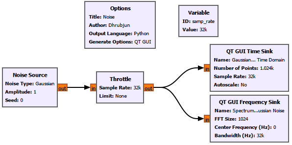
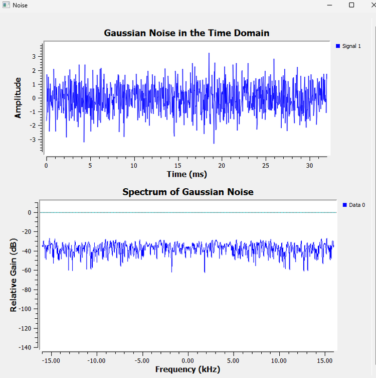
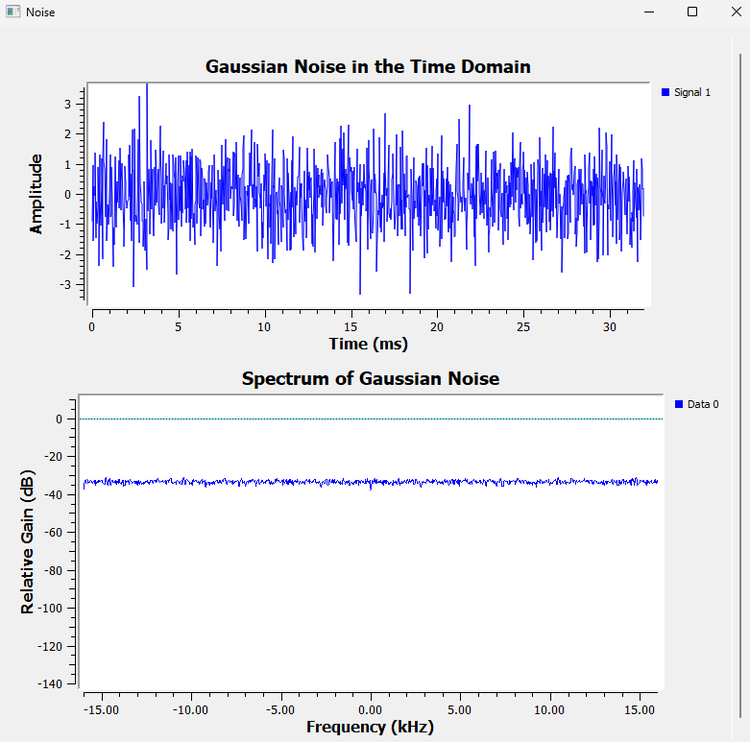
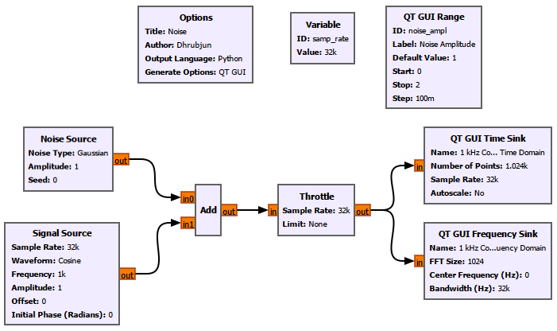
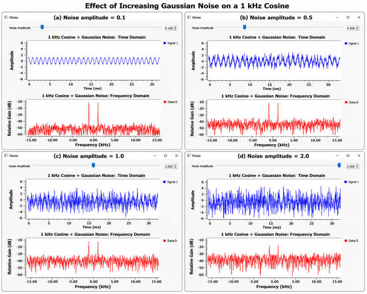
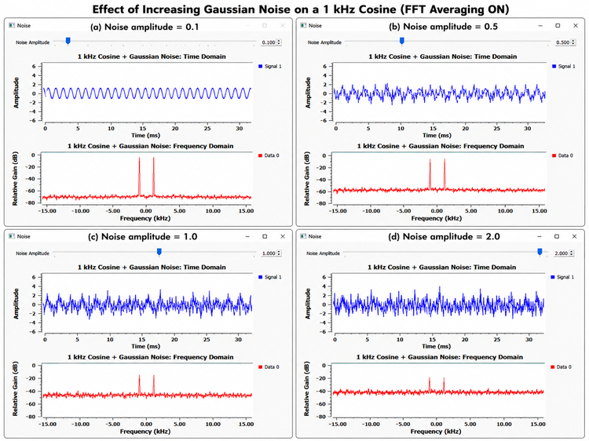
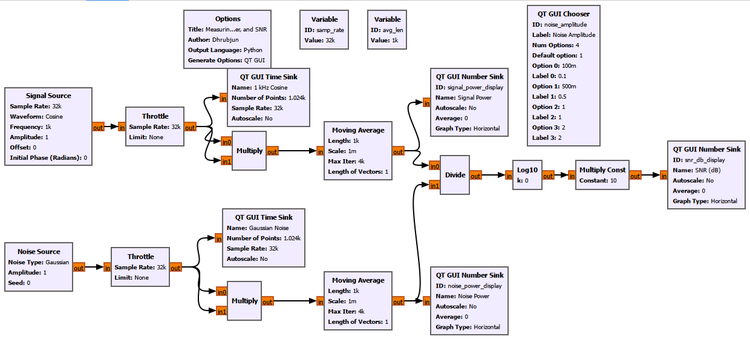
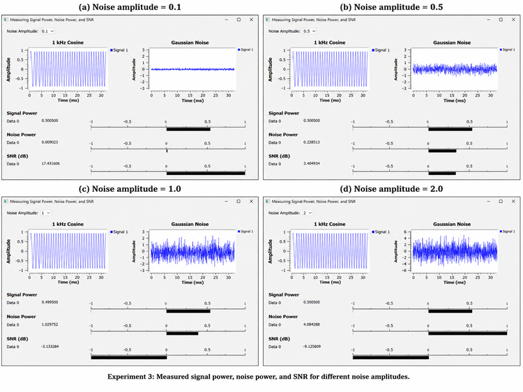
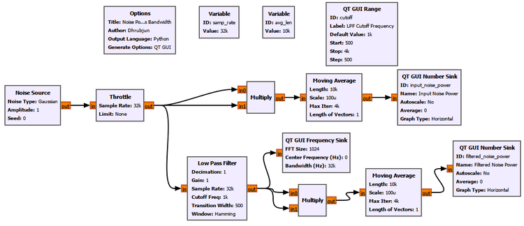
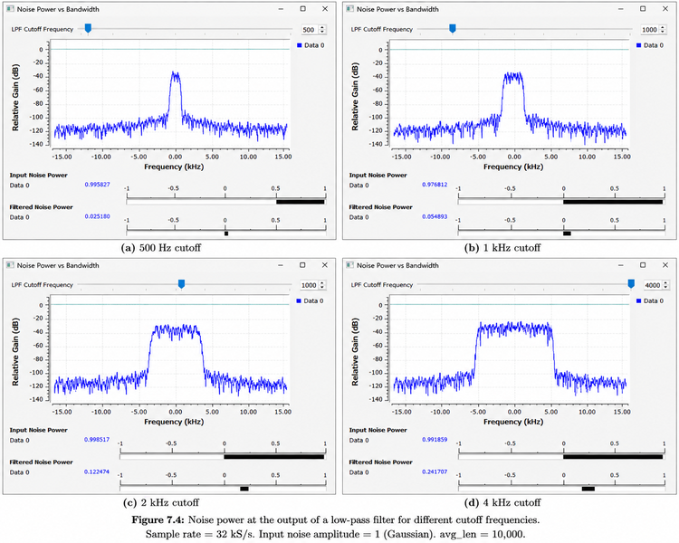

Chapter 7: Noise, Noise Floor, and SNR
Main Question
How weak can a signal become before it disappears into the noise?
7.1 Real Signals Are Never Completely Clean
Most of the signals we have worked with so far have been unusually clean.
We generated sine waves, cosine waves, and complex tones with exact frequencies and amplitudes. When we looked at them in the frequency domain, their spectral components were easy to identify.
Real receivers are not usually that friendly.
Connect an antenna to a receiver and look at the spectrum. Even when no obvious transmission is present, the display does not become completely empty. There is always some background activity.
Some of it comes from the receiver electronics themselves. Some comes from the environment. Nearby electronic equipment may contribute interference. Even the thermal motion of electrons inside electronic components contributes noise.
So a useful signal rarely arrives by itself.
A more realistic picture is
\[ \boxed{ \text{Received signal} = \text{wanted signal} \+ \text{noise} \+ \text{other unwanted signals} } \]
In this chapter, we will begin with the simplest part of that problem: ****noise****.
We will first look at noise by itself. Then we will add noise to a known signal and gradually make the noise stronger.
After that, instead of simply saying that a signal “looks noisy,” we will put a number on it.
That number is the ****signal-to-noise ratio****, or ****SNR****.
Finally, we will investigate something that becomes very important in a real receiver: how the amount of noise we collect depends on bandwidth.
7.2 What Do We Mean by Noise?
In signal processing, noise is an unwanted random component that interferes with the signal we are interested in.
Unlike the sinusoidal signals we used earlier, noise does not repeat in a simple, predictable pattern.
Consider a cosine:
\[ x(t)=\cos(2\pi f_0t) \]
Once we know its amplitude, frequency, and phase, we can predict what it will do next.
Noise is different.
If we know the present value of a random noise sample, we generally cannot use that value alone to predict the exact value of the next sample.
That does not mean noise cannot be described.
We simply describe it differently.
Instead of trying to predict every individual sample, we use statistical properties.
For example, we can ask:
What is its average value?
How widely do its samples vary?
How much power does it contain?
How is that power distributed across frequency?
These questions are much more useful than trying to predict the exact value of the next noise sample.
7.3 Gaussian Noise and White Noise
For our first experiments, we will use ****Gaussian noise****.
The word Gaussian describes the statistical distribution of the sample values.
If we collect a large number of Gaussian-noise samples and plot a histogram, values near the mean occur more frequently, while very large positive or negative values occur less frequently.
For zero-mean Gaussian noise, the distribution is centred around zero.
This is why setting the GNU Radio Gaussian Noise Source amplitude to 1 does ****not**** mean that the generated samples are restricted to
\[ -1\leq x[n]\leq1 \]
Samples greater than \(+1\) or smaller than \(-1\) are perfectly possible.
We will also work with ****white noise****.
The word white describes how noise power is distributed across frequency.
Ideally, white noise has a constant power spectral density:
\[ S_n(f)=\text{constant} \]
In simple terms:
****White noise does not favour one frequency over another within the bandwidth being considered.****
The name comes from an analogy with white light, which contains many optical frequencies rather than a single colour.
Gaussian and white therefore describe two different properties.
|—|—|
Noise can be Gaussian without necessarily being white, and it can be white without necessarily having a Gaussian amplitude distribution.
In our GNU Radio experiments, we will use Gaussian noise that is approximately white across the frequency range represented by our sampled system.
This last point matters.
Ideal mathematical white noise is often described as extending over unlimited bandwidth. A real sampled system does not have unlimited bandwidth.
If our sample rate is
\[ f_s=32\text{ kHz} \]
the discrete-time spectrum we observe is limited to the Nyquist interval
\[ -\frac{f_s}{2} \leq f < +\frac{f_s}{2} \]
which, in our case, is approximately
\[ -16\text{ kHz} \leq f < +16\text{ kHz} \]
So when we call the GNU Radio noise “white,” we are interested in its approximately uniform spectral behaviour over this finite frequency range.
7.4 Building the First Noise Experiment
Before adding noise to a useful signal, let us look at noise by itself.
The flowgraph is deliberately simple.
A ****Noise Source**** generates Gaussian noise. The same stream is observed in both the time and frequency domains.
Because this is a software-only simulation and there is no hardware controlling the rate at which samples are produced, we also use a ****Throttle**** block.
The processing chain is:
┌──→ QT GUI Time Sink
│
Noise Source → Throttle ─┤
│
└──→ QT GUI Frequency SinkWe use
\[ f_s=32\\,000\text{ samples/s} \]
or
\[ f_s=32\text{ kHz} \]
The Noise Source amplitude is initially set to 1.

GNU Radio Settings
Create a variable:
|—|—:|
samp_rate |32e3 |Configure the main blocks as follows.
|—|—|—|
1 |0 |samp_rate |samp_rate |1024 |0 |samp_rate |For the first observation, leave frequency-sink averaging disabled.
Before Running the Flowgraph
We already know what a sinusoid looks like in the time domain.
It has a clear repeating pattern.
But what should noise look like?
And if the time-domain waveform is random, what should we expect in the frequency domain?
Let us run the flowgraph.
Noise in the Time Domain
The Time Sink immediately looks very different from the clean signals we used earlier.
There is no obvious repeating waveform.
The samples jump irregularly above and below zero.
This is our first useful observation:
****Noise can look completely irregular in the time domain.****
The Gaussian Noise Source amplitude is set to 1, but we can still see individual samples whose magnitudes are greater than 1.
That is expected.
The amplitude parameter controls the scale of the Gaussian distribution. It is not a hard upper and lower limit on the generated samples.
Noise in the Frequency Domain
The Frequency Sink tells a different part of the story.
With
\[ f_s=32\text{ kHz} \]
the displayed frequency range extends approximately from
\[ -\frac{f_s}{2} \]
to
\[ +\frac{f_s}{2} \]
which gives approximately
\[ -16\text{ kHz} \quad\text{to}\quad +16\text{ kHz} \]
Unlike a sinusoid, the noise does not produce one narrow spectral peak.
Instead, spectral energy appears across the full displayed frequency range.

This is what we expect from approximately white noise.
But there is something that may initially seem strange.
The spectrum is not perfectly flat.
It jumps up and down from one frequency bin to another.
If white noise has a flat power spectral density, why does the FFT look so jagged?
7.5 Why Does White Noise Not Look Perfectly Flat?
The statement
****White noise has a flat power spectral density****
does not mean that every FFT of every finite block of white noise will produce a perfectly horizontal line.
Remember what we learned in Chapter 6.
The FFT does not analyse an infinitely long signal. It operates on a finite block of samples.
For example, if
\[ N=1024 \]
GNU Radio analyses a finite group of 1024 noise samples.
A short time later, it analyses another group.
Then another.
Noise is random.
One particular block may happen to contain slightly more energy in one FFT bin and slightly less in another.
The next block will be different.
Conceptually:
FFT frame 1 → noisy spectral estimate
FFT frame 2 → slightly different estimate
FFT frame 3 → another different estimate
FFT frame 4 → another different estimate
...The underlying statistical behaviour can be flat even though each individual finite spectral estimate fluctuates.
This is not an error in the FFT.
It is a consequence of estimating the spectrum of a random process using a finite amount of data.
GNU Radio gives us a useful way to see this directly.
7.6 FFT Averaging: What Is Actually Happening?
Noise gives us a very good reason to understand the ****Averaging**** option in the QT GUI Frequency Sink.
Suppose GNU Radio calculates one spectral estimate:
\[ S_1[k] \]
A short time later, it calculates another:
\[ S_2[k] \]
Then another:
\[ S_3[k] \]
and so on.
Without averaging, the displayed spectrum follows these changing estimates closely.
Since the noise is random, the displayed trace fluctuates.
A simple way to understand spectral averaging is to imagine combining several spectral estimates:
\[ \overline{S}[k] \approx \frac{ S_1[k]+S_2[k]+\cdots+S_M[k] }{M} \]
If one FFT happens to produce an unusually high value in a particular bin and another produces a lower value there, averaging reduces some of that frame-to-frame variation.
The exact implementation used by the display does not need to be identical to the simple arithmetic average above for us to understand the main idea.
The important idea is:
****Do not rely entirely on one noisy spectral estimate. Combine information from successive estimates.****
Turning Averaging On
Open the ****QT GUI Frequency Sink****.
Enable its averaging option while leaving the Noise Source, sample rate, FFT size, and the rest of the flowgraph unchanged.
Use the same averaging configuration that we used when capturing the experiment figure.
Then run the flowgraph again.

The difference is immediately visible.
The time-domain waveform is still random.
But the frequency-domain trace becomes much smoother.
This reveals something important:
****FFT averaging did not remove noise from the actual signal.****
The samples flowing through the system are still noisy.
Only the displayed spectral estimate has been averaged.
FFT averaging is therefore not the same thing as filtering the original time-domain signal.
Why Does the Spectrum Become Smoother?
The random spectral fluctuations change from one FFT frame to another.
Averaging reduces these fluctuations.
The underlying broadband character of the white noise remains.
After averaging, it becomes much easier to see that the noise occupies the entire displayed frequency range.
The Cost of Averaging
Averaging is useful, but it comes with a trade-off.
Suppose the signal suddenly changes.
If the display depends strongly on previous spectral estimates, information from those previous estimates does not disappear immediately.
So:
\[ \boxed{ \text{More averaging} \longleftrightarrow \text{Smoother display but slower response} } \]
This is why averaging settings matter on spectrum analysers and SDR displays.
A stable signal buried in noise may benefit from more averaging.
A short or rapidly changing signal may require a faster response.
7.7 Can We Still Find a Signal When Noise Is Present?
Noise by itself is useful to study, but in a receiver we are normally interested in something else:
****Can we still find the signal when noise is present?****
To investigate this, we return to a familiar signal:
\[ x(t)=\cos(2\pi1000t) \]
It is a real 1 kHz cosine with amplitude 1.
We generate Gaussian noise and add the two signals together.
The received signal in our simulation is therefore
\[ r(t)=x(t)+n(t) \]
The flowgraph is:
Signal Source ──┐
│
├──→ Add → Throttle ──┬──→ QT GUI Time Sink
│ │
Noise Source ───┘ └──→ QT GUI Frequency SinkA ****QT GUI Range**** controls the noise amplitude while the flowgraph is running.
This allows us to change the amount of noise without stopping and rebuilding the experiment.

GNU Radio Settings
Keep
\[ f_s=32\text{ kHz} \]
and create a variable for the noise amplitude if required by the QT GUI Range.
The important settings are:
|—|—|—|
1e3 |1 |samp_rate |samp_rate |1024 |samp_rate |For the first comparison, keep FFT averaging ****off****.
We deliberately use ****Float**** streams here because both the cosine and the noise are real-valued.
Complex IQ signals will return when we begin working with frequency translation and receivers.
We test four noise amplitudes:
\[ A_n=0.1,\quad0.5,\quad1.0,\quad2.0 \]
Noise Amplitude = 0.1
At a noise amplitude of 0.1, the cosine is still very easy to recognize in the time domain.
The waveform is no longer perfectly smooth, but its periodic structure is obvious.
The frequency-domain view is even clearer.
Because the signal is a real cosine, we see spectral components near
\[ -1\text{ kHz} \quad\text{and}\quad +1\text{ kHz} \]
The noise produces a broadband background underneath them.
The two spectral peaks stand well above that background.
Noise Amplitude = 0.5
Increasing the noise amplitude to 0.5 makes the time-domain waveform noticeably rougher.
The cosine is still visible, but the noise is now difficult to ignore.
In the frequency domain, however, the two spectral components near
\[ \pm1\text{ kHz} \]
remain easy to identify.
Noise Amplitude = 1.0
Now the noise becomes comparable in scale to the signal.
The time-domain waveform looks heavily corrupted.
If we were shown only a short section of the Time Sink without knowing what signal had been transmitted, identifying a 1 kHz cosine by eye would be much harder.
But the frequency-domain plot still tells us something useful.
The peaks near
\[ -1\text{ kHz} \quad\text{and}\quad +1\text{ kHz} \]
are still present.
Noise Amplitude = 2.0
Finally, we increase the noise amplitude to 2.
The time-domain waveform is now dominated by random fluctuations.
The sinusoidal structure is difficult to recognize by eye.
Yet the Frequency Sink can still show evidence of the 1 kHz signal.
The four cases are shown together below.

This experiment gives us one of the most useful lessons in this chapter:
****A signal that is difficult to recognize in the time domain may still be identifiable in the frequency domain.****
The persistent sinusoidal component is concentrated around particular frequencies, while the white-noise energy is spread much more broadly.
This is one reason spectrum analysis is so useful in SDR.
7.8 What Is the Noise Floor?
Look again at the frequency-domain plots from Experiment 2.
The noise does not appear as one isolated spectral line.
Instead, it creates a broad background across the spectrum.
This background is commonly referred to as the ****noise floor****.
A useful way to picture it is:
Magnitude
↑
│ signal
│ │
│ │
│ \~\~\~\~\~\~\~\~ │ \~\~\~\~\~\~\~\~
│ \~\~\~\~\~\~\~\~\~\~\~\~\~\~\~ │ \~\~\~\~\~\~\~\~\~\~\~\~\~\~\~
│\~\~\~\~\~\~\~\~\~\~\~\~\~\~\~\~\~\~\~\~\~\~\~\~\~\~\~\~\~\~\~\~\~\~\~\~\~\~\~\~\~\~
└──────────────────────────────────────────→ Frequency
noise floorA strong signal rises clearly above the surrounding noise.
As the signal becomes weaker, or the noise becomes stronger, the spectral peak moves closer to that background.
Eventually, detecting the signal becomes more difficult.
There is an important distinction here.
The ****total noise power**** in a signal and the ****height of the displayed FFT noise floor**** are related, but they are not exactly the same quantity.
The level shown by a spectrum display can depend on things such as:
FFT size;
window type;
normalization;
averaging;
receiver bandwidth;
gain;
display configuration.
For this reason, we should not automatically treat the height shown on an uncalibrated GNU Radio Frequency Sink as an absolute physical noise-power measurement.
For now, the important idea is:
****The noise floor is the background spectral level against which we try to identify useful spectral components.****
Later in this chapter, we will measure noise power directly from the samples rather than trying to infer it from the height of the FFT display.
7.9 Now Turn On FFT Averaging
Experiment 1 showed that averaging makes a noisy spectral estimate smoother.
Now we can ask a more practical question:
****Can averaging help us see a persistent signal inside noise?****
Keep the Experiment 2 flowgraph unchanged.
The signal remains a 1 kHz cosine.
The Gaussian noise remains exactly the same kind of noise.
The only thing we change is the averaging setting of the ****QT GUI Frequency Sink****.
Enable FFT averaging and repeat the four noise-amplitude cases:
\[ 0.1,\quad0.5,\quad1.0,\quad2.0 \]
The results are shown below.

The spectrum is now much smoother.
But why do the signal peaks remain?
Our cosine always has the same frequency:
\[ f_0=1\text{ kHz} \]
So successive FFT frames repeatedly contain spectral energy near
\[ -f_0 \quad\text{and}\quad +f_0 \]
Those components consistently appear at the same frequencies.
The random noise behaves differently.
Its instantaneous FFT values fluctuate from frame to frame.
Averaging reduces some of that random frame-to-frame variation.
Conceptually:
\[ \boxed{ \text{Persistent spectral components remain at consistent frequencies} } \]
while
\[ \boxed{ \text{Random spectral fluctuations become smoother with averaging} } \]
This can make a stable tone easier to distinguish from a noisy spectral background.
But the most important point is what averaging ****did not**** do.
It did not clean the received time-domain signal.
The noisy samples themselves are unchanged.
We only changed the way successive spectral estimates are displayed.
7.10 From “Noisy” to a Number
So far, we have described the signal mostly by looking at it.
At low noise amplitude we said:
The signal is easy to see.
At higher noise amplitude we said:
The signal is becoming difficult to recognize.
That is useful while learning, but engineers need something more precise.
Suppose two receivers produce different-looking noisy signals.
Which one has the better signal relative to its noise?
Suppose we change the receiver gain.
Did the signal improve relative to the noise, or did both simply increase together?
To answer questions like these, we need to compare ****signal power**** with ****noise power****.
That comparison is called the ****signal-to-noise ratio****:
\[ \boxed{ \mathrm{SNR} = \frac{P_s}{P_n} } \]
where
\[ P_s=\text{signal power} \]
and
\[ P_n=\text{noise power} \]
If
\[ P_s>P_n \]
the linear SNR is greater than 1.
If
\[ P_s=P_n \]
then
\[ \mathrm{SNR}=1 \]
And if
\[ P_s\<P_n \]
the linear SNR is less than 1.
SNR is usually expressed in decibels:
\[ \boxed{ \mathrm{SNR}_{\mathrm{dB}} = 10\log_{10} \left( \frac{P_s}{P_n} \right) } \]
This gives us a much better language for describing what we saw in Experiment 2.
Instead of saying only
“The noise amplitude is 1,”
we can say something like
“The measured SNR is approximately -3 dB.”
But before using that number, we should understand where it comes from.
So instead of asking GNU Radio to hide the calculation from us, we are going to build the SNR calculation ourselves.
7.11 Measuring the Power of the Cosine
Our signal is
\[ x[n] = A\cos \left( 2\pi f_0\frac{n}{f_s} \right) \]
with
\[ A=1 \]
\[ f_0=1\text{ kHz} \]
and
\[ f_s=32\text{ kHz} \]
For a real sinusoid with peak amplitude \(A\), the average power is
\[ P_s=\frac{A^2}{2} \]
Therefore,
\[ P_s = \frac{1^2}{2} = 0.5 \]
We could simply calculate this on paper and move on.
But it is much more useful to make GNU Radio measure the power from the actual samples.
For a real discrete-time signal, average power can be estimated using
\[ P_s \approx \frac{1}{N} \sum_{n=0}^{N-1} x^2[n] \]
This equation tells us exactly what we need to build.
First, square every sample.
Then average the squared values.
Squaring a Real Signal in GNU Radio
The Signal Source is configured as ****Float****, so its output is a real-valued sample stream:
\[ x[0],x[1],x[2],\ldots \]
We connect the same signal to both inputs of a ****Multiply**** block.
The block therefore calculates
\[ x[n]\times x[n] = x^2[n] \]
The output becomes
\[ x^2[0],x^2[1],x^2[2],\ldots \]
These are squared sample values.
They are not yet the average power.
For that, we need another block.
7.12 What Is the Moving Average Block Actually Doing?
We now use a ****Moving Average**** block.
This block is worth understanding because moving averages appear in many signal-processing applications.
Suppose the averaging length is \(N\).
A moving average can be written as
\[ y[n] = \frac{1}{N} \sum_{k=0}^{N-1} x[n-k] \]
In our power-measurement branch, however, the input to the Moving Average block is already \(x^2[n]\).
So the block calculates
\[ P_s[n] \approx \frac{1}{N} \sum_{k=0}^{N-1} x^2[n-k] \]
We use
\[ N=1000 \]
so each power estimate is based on 1000 consecutive squared samples.
Imagine that the current window contains
x²[0], x²[1], x²[2], ... , x²[999]The block averages them.
When another sample arrives, the window moves forward:
x²[1], x²[2], x²[3], ... , x²[1000]Then again:
x²[2], x²[3], x²[4], ... , x²[1001]and so on.
That is why it is called a ****moving average****.
In GNU Radio, configure it using
Length = 1000
Scale = 1/1000GNU Radio may display the scale as
1mbecause m means milli:
\[ 1\text{m}=10^{-3}=0.001 \]
The Moving Average block first forms the running sum and then applies the scale.
The scale
\[ \frac{1}{1000} \]
turns that running sum into an average.
For our amplitude-1 cosine, the measured value settles close to
\[ P_s=0.5 \]
which agrees with the theoretical result.
7.13 A Note About Real and Complex Power
The method we are using here works because our signal is ****real-valued****.
For a real sample \(x[n]\),
\[ x^2[n] \]
is the quantity we need when calculating average power.
Later, we will work extensively with complex IQ signals.
Suppose
\[ z[n]=I[n]+jQ[n] \]
For a complex signal, we do not normally calculate power by simply multiplying
\[ z[n]\times z[n] \]
Instead, we use magnitude squared:
\[ |z[n]|^2 = z[n]z^*[n] \]
which gives
\[ |z[n]|^2 = I^2[n]+Q^2[n] \]
GNU Radio provides blocks such as ****Complex to Mag²**** for exactly this kind of calculation.
We do not need that block in this experiment because our cosine and noise streams are Float.
But this distinction will become important once we return to complex IQ signals.
7.14 Measuring Gaussian-Noise Power
Now repeat the same process for the Noise Source.
Let the noise samples be
\[ w[n] \]
First square them:
\[ w^2[n] \]
Then calculate their moving average:
\[ P_n \approx \frac{1}{N} \sum_{n=0}^{N-1} w^2[n] \]
This gives us an estimate of the average noise power.
For zero-mean Gaussian noise with standard deviation \(\sigma\),
\[ P_n = E\\{w^2[n]\\} = \sigma^2 \]
For the Gaussian Noise Source used in our experiment, the amplitude setting scales the generated Gaussian samples. With the configuration we used, the expected noise power is approximately
\[ P_n\approx A_n^2 \]
where \(A_n\) is the Noise Source amplitude.
Therefore, if
\[ A_n=0.1 \]
we expect approximately
\[ P_n=0.01 \]
If
\[ A_n=0.5 \]
we expect approximately
\[ P_n=0.25 \]
If
\[ A_n=1 \]
we expect approximately
\[ P_n=1 \]
and if
\[ A_n=2 \]
we expect approximately
\[ P_n=4 \]
This gives us an important relationship:
\[ \boxed{ P_n\propto A_n^2 } \]
So doubling the noise amplitude does ****not**** double the noise power.
It increases the expected noise power by a factor of four.
7.15 Building the SNR Calculation
Once we have \(P_s\) and \(P_n\), the rest is straightforward.
First calculate the linear SNR:
\[ \mathrm{SNR} = \frac{P_s}{P_n} \]
Then convert it to decibels:
\[ \boxed{ \mathrm{SNR}_{\mathrm{dB}} = 10\log_{10} \left( \frac{P_s}{P_n} \right) } \]
Notice that we use
\[ 10\log_{10} \]
rather than
\[ 20\log_{10} \]
because we are taking the ratio of ****powers****.
We implement the equation directly in GNU Radio:
Signal Power ───────┐
│
├──→ Divide → Log10 → Multiply Const → SNR (dB)
│
Noise Power ────────┘The ****Divide**** block calculates
\[ \frac{P_s}{P_n} \]
The ****Log10**** block calculates
\[ \log_{10} \left( \frac{P_s}{P_n} \right) \]
The ****Multiply Const**** block uses a constant of 10, giving
\[ 10\log_{10} \left( \frac{P_s}{P_n} \right) \]
Finally, a ****QT GUI Number Sink**** displays the result.
So there is no mysterious SNR calculation hidden from us.
We have built the equation ourselves.
7.16 GNU Radio Flowgraph for Measuring SNR
The complete flowgraph is shown below.

The signal branch calculates
\[ x[n] \rightarrow x^2[n] \rightarrow \text{average} \rightarrow P_s \]
The noise branch calculates
\[ w[n] \rightarrow w^2[n] \rightarrow \text{average} \rightarrow P_n \]
The two power estimates are then combined:
\[ P_s,P_n \rightarrow \frac{P_s}{P_n} \rightarrow 10\log_{10}(\cdot) \rightarrow \mathrm{SNR}_{\mathrm{dB}} \]
GNU Radio Settings
Create the following variables:
|—|—:|
samp_rate | 32e3 |avg_len | 1000 |Configure the signal branch:
|—|—|—|
1e3 |1 |avg_len |1.0/avg_len |Configure the noise branch:
|—|—|—|
avg_len |1.0/avg_len |Configure the SNR branch:
|—|—|
n = 1, k = 0 |10 |SNR (dB) |The important blocks and their roles are:
|—|—|
7.17 Comparing Different Noise Levels
We now repeat the measurement using the same four noise amplitudes from Experiment 2:
\[ A_n = 0.1,\quad0.5,\quad1.0,\quad2.0 \]
The signal does not change.
Its amplitude remains
\[ A_s=1 \]
so its expected power remains
\[ P_s=0.5 \]
Only the noise amplitude changes.

The values measured during our experiment were approximately:
|—:|—:|—:|—:|
The first thing to notice is the signal power.
It remains close to
\[ P_s=0.5 \]
in every measurement.
That is exactly what we should expect because the signal itself was never changed.
The noise power behaves very differently.
As the noise amplitude increases,
\[ 0.1 \rightarrow 0.5 \rightarrow 1 \rightarrow 2 \]
the expected noise power follows approximately
\[ 0.01 \rightarrow 0.25 \rightarrow 1 \rightarrow 4 \]
Our measured values are close to those predictions.
7.18 Comparing Theory with Measurement
Because
\[ P_s=0.5 \]
and approximately
\[ P_n=A_n^2 \]
we can predict the SNR before running GNU Radio:
\[ \mathrm{SNR}_{\mathrm{dB}} = 10\log_{10} \left( \frac{0.5}{A_n^2} \right) \]
This gives:
|—:|—:|—:|
The agreement is quite good.
The values are not exactly identical, and we should not expect them to be.
Gaussian noise is random.
Our noise-power measurement uses a finite number of samples at any instant.
One averaging window may contain slightly more power than expected.
Another may contain slightly less.
As the Moving Average window continues to slide, the displayed noise power and SNR fluctuate slightly.
That is normal.
7.19 Why Does the Measurement Fluctuate?
Suppose the theoretical noise power is
\[ P_n=1 \]
That does not mean every group of 1000 random samples will have a measured power of exactly 1.
One group might produce
\[ P_n=0.97 \]
Another might produce
\[ P_n=1.03 \]
Another might give
\[ P_n=1.01 \]
Over a sufficiently large amount of data, the estimate tends toward the expected statistical value.
Increasing the Moving Average length generally makes the displayed estimate more stable because more samples contribute to each measurement.
But again, there is a trade-off.
A longer averaging window responds more slowly when the signal or noise changes.
So we encounter a principle similar to the one we saw with FFT averaging:
\[ \boxed{ \text{Longer averaging} \longleftrightarrow \text{More stable estimate but slower response} } \]
The calculations are different, but the practical trade-off is similar.
It is also important not to confuse the two kinds of averaging.
The ****QT GUI Frequency Sink averaging**** changes the way successive spectra are displayed.
The ****Moving Average block**** is operating on the actual stream of squared samples to produce our power estimate.
They serve different purposes.
7.20 What Does a Negative SNR Mean?
One result from this experiment deserves special attention.
For noise amplitude 1, we measured approximately
\[ \mathrm{SNR}\approx-3\text{ dB} \]
For noise amplitude 2, we measured approximately
\[ \mathrm{SNR}\approx-9\text{ dB} \]
At first, a negative SNR may sound strange.
It does ****not**** mean that the signal power is negative.
Power is still positive.
A negative SNR in dB simply means
\[ P_s\<P_n \]
For example, suppose
\[ P_s=0.5 \]
and
\[ P_n=1 \]
Then
\[ \frac{P_s}{P_n}=0.5 \]
and therefore
\[ 10\log_{10}(0.5) \approx -3.01\text{ dB} \]
So:
\[ \boxed{ \mathrm{SNR}<0\text{ dB} \quad\Rightarrow\quad P_s\<P_n } \]
This does ****not**** automatically mean that the signal is undetectable.
That is exactly what we observed in Experiment 2.
Even when the time-domain waveform looked dominated by noise, the persistent 1 kHz component could still be visible in the frequency domain.
Whether a signal can actually be detected depends on more than total SNR alone.
Bandwidth, observation time, filtering, modulation, processing gain, and the detection method can all matter.
7.21 One Useful 6 dB Observation
Compare the last two measurements.
The noise amplitude changes from
\[ 1 \]
to
\[ 2 \]
So the amplitude doubles.
But the expected noise power changes from approximately
\[ 1 \]
to
\[ 4 \]
That is a fourfold increase in power.
The SNR correspondingly changes from approximately
\[ -3\text{ dB} \]
to
\[ -9\text{ dB} \]
The difference is about
\[ 6\text{ dB} \]
This is not a coincidence.
Because power is proportional to amplitude squared, doubling an amplitude corresponds to a factor of four in power.
In decibels,
\[ 10\log_{10}(4) \approx 6.02\text{ dB} \]
Equivalently,
\[ 20\log_{10}(2) \approx 6.02\text{ dB} \]
So, with the signal held constant:
****Doubling the Gaussian-noise amplitude reduces the SNR by approximately 6 dB.****
We did not just calculate this on paper.
We observed essentially the same behaviour in our GNU Radio measurements.
7.22 One More Question: What Determines the Noise Power?
Experiment 3 gave us
\[ \mathrm{SNR} = \frac{P_s}{P_n} \]
We now know how to measure both \(P_s\) and \(P_n\) directly from the samples.
But this raises another question.
What determines how much noise power reaches a receiver in the first place?
One important answer is ****bandwidth****.
Until now, we have mostly treated noise as a broadband background.
But if that noise is spread across frequency, then the amount of frequency range we allow into our receiver should matter.
A narrow receiver accepts noise from a relatively small frequency range.
A wider receiver accepts noise from a larger frequency range.
So what happens to the total measured noise power when we change that bandwidth?
That is the purpose of our final experiment in this chapter.
7.23 The Basic Idea
Consider noise whose power spectral density is approximately uniform over the frequency range we are interested in.
That is the behaviour we expect from white noise.
If we collect that noise over a narrow frequency range, we collect some noise power.
If we collect it over a wider frequency range, we collect more.
The important relationship for this experiment is
\[ \boxed{ P_n\propto B } \]
where \(B\) represents the effective noise bandwidth being accepted.
In simple words:
****More accepted bandwidth means more total noise power.****
If the effective bandwidth doubles, we therefore expect the total noise power to approximately double:
\[ B\rightarrow2B \]
should approximately produce
\[ P_n\rightarrow2P_n \]
There are different one-sided and two-sided conventions for writing noise power spectral density equations.
We do not need to introduce those conventions yet.
For this experiment, the important result is simply the proportional relationship:
\[ P_n\propto B \]
We can test that directly.
7.24 Building the Experiment in GNU Radio
The GNU Radio flowgraph used for this experiment is shown below.

The experiment begins with a Gaussian Noise Source.
The noise then splits into two branches.
The first branch measures the power of the original noise before filtering.
The second branch sends the noise through a ****Low Pass Filter**** and then measures the power remaining after the filter.
Conceptually:
┌──→ Square → Moving Average → Input Noise Power
│
Noise Source → Throttle ─┤
│
└──→ Low Pass Filter
│
├──→ QT GUI Frequency Sink
│
└──→ Square
│
↓
Moving Average
│
↓
Filtered Noise PowerThis gives us two useful measurements:
****Input Noise Power****
****Filtered Noise Power****
The input measurement acts as a reference.
The filtered measurement tells us how much noise remains after we restrict the accepted frequency range.
7.25 GNU Radio Settings for Experiment 4
We continue using
\[ f_s=32\text{ kHz} \]
Create the following variables:
|—|—:|
samp_rate | 32e3 |avg_len | 10000 |cutoff | initially 1000 |Configure the Noise Source:
|—|—|
1 |0 |Configure the Throttle:
|—|—|
samp_rate |Configure the Low Pass Filter:
|—|—|
1 |1 |samp_rate |cutoff |500 Hz |Configure the QT GUI Range controlling cutoff:
|—|—:|
500 Hz |4000 Hz |500 Hz |1000 Hz |For both power-measurement branches:
|—|—|
avg_len |1.0/avg_len |Since
\[ \frac{1}{10000}=0.0001 \]
GNU Radio may display this scale as
100ubecause
\[ 100\\,\mu=100\times10^{-6}=10^{-4} \]
Configure the Frequency Sink with:
|—|—|
1024 |0 |samp_rate |The Frequency Sink is connected ****after the Low Pass Filter****, so the spectrum displayed there is the spectrum of the filtered noise.
7.26 Measuring the Noise Power
The power calculation follows exactly the same idea we used in Experiment 3.
For a real-valued signal \(x[n]\), average power can be estimated from
\[ P \approx \frac{1}{N} \sum_{n=0}^{N-1} x^2[n] \]
The signal is first multiplied by itself:
\[ x[n]\times x[n] = x^2[n] \]
The Moving Average block then averages the squared samples.
For the original noise,
\[ P_{\text{input}} \approx \text{average}\left(x^2[n]\right) \]
After the low-pass filter, let the filtered samples be \(y[n]\).
Then
\[ P_{\text{filtered}} \approx \text{average}\left(y^2[n]\right) \]
We use an averaging length of
\[ N=10000 \]
A longer averaging interval is useful here because instantaneous noise-power estimates fluctuate continuously.
The longer average gives us a more stable number, making the effect of changing the filter easier to see.
7.27 Why Measure the Input Noise Power Too?
At first, measuring the input noise power may seem unnecessary.
After all, our main interest is the filtered noise.
But the input measurement gives us an important reference.
With the Gaussian Noise Source amplitude set to 1, the measured input power remains close to
\[ P_{\text{input}}\approx1 \]
It does not stay exactly equal to 1 because the signal is random.
But with sufficient averaging, it remains reasonably close.
Now suppose we move the LPF cutoff slider.
If the input noise power stays around 1 while the filtered noise power changes, we know that the Noise Source itself has not changed.
The thing we intentionally changed was the frequency range allowed through the filter.
That makes the experiment much easier to interpret.
7.28 Changing the Accepted Noise Bandwidth
We tested four low-pass-filter cutoff frequencies:
|—:|—|
The transition width remains
\[ 500\text{ Hz} \]
throughout the experiment.
Nothing about the Noise Source is changed between these measurements.
Only the filter cutoff changes.
There is one detail we should be careful about here.
Our real low-pass filter is centred around DC.
So a cutoff frequency \(f_c\) corresponds roughly to a passband extending on both sides of zero:
\[ -f_c \quad\text{to}\quad +f_c \]
For example, a 1 kHz cutoff produces an approximately two-sided pass region around
\[ -1\text{ kHz} \quad\text{to}\quad +1\text{ kHz} \]
before accounting for the transition region.
For this reason, we should not simply say
\[ B=f_c \]
without first defining exactly what bandwidth convention we are using.
Fortunately, we do not need to do that to understand this experiment.
When we double \(f_c\), the width of the accepted frequency region also approximately doubles.
So if the noise is approximately white, the total passed noise power should also approximately double.
7.29 What Do We Expect to See?
Before looking at the results, let us make a prediction.
For approximately white noise,
\[ P_n\propto B \]
Therefore, if the accepted frequency range doubles,
\[ B\rightarrow2B \]
we expect approximately
\[ P_n\rightarrow2P_n \]
So increasing the cutoff from 500 Hz to 1 kHz should increase the measured filtered-noise power.
Increasing it again to 2 kHz should increase the power further.
The same should happen when going from 2 kHz to 4 kHz.
The relationship will not be perfectly exact.
We are using a practical FIR low-pass filter rather than an ideal rectangular filter, and our noise-power estimate is calculated from random samples.
But the overall trend should be clear.
7.30 Experimental Results
The following figure combines the four measurements obtained using cutoff frequencies of 500 Hz, 1 kHz, 2 kHz, and 4 kHz.

The measured values were approximately:
|—:|—:|—:|
The exact numbers move slightly from run to run because the input is random noise.
What matters here is the overall pattern.
The input noise power remains approximately constant:
\[ P_{\text{input}}\approx1 \]
At the same time, the filtered noise power increases as we widen the filter.
That is exactly the behaviour we expected.
7.31 Looking at the Spectrum
The Frequency Sink makes the result much easier to understand visually.
At a cutoff frequency of 500 Hz, only a relatively narrow region around 0 Hz passes through the low-pass filter.
When the cutoff is increased to 1 kHz, the visible passed-noise spectrum becomes wider.
At 2 kHz, an even larger portion of the noise spectrum passes.
Finally, at 4 kHz, the passed noise occupies a much wider frequency region.
The important point is that the noise at each individual frequency has not suddenly become much stronger simply because we moved the cutoff slider.
Instead, we are allowing noise from ****more frequencies**** to reach the output.
All of those frequencies contribute to the total noise power.
That is why the measured power increases.
7.32 Comparing 500 Hz and 1 kHz
Let us compare the first two measurements.
At a 500 Hz cutoff, we measured approximately
\[ P_{500}\approx0.025 \]
At a 1 kHz cutoff,
\[ P_{1000}\approx0.055 \]
The cutoff frequency doubled:
\[ 500 \rightarrow 1000\text{ Hz} \]
and the measured noise power increased by roughly a factor of two.
The ratio is
\[ \frac{P_{1000}}{P_{500}} = \frac{0.055}{0.025} \approx2.2 \]
It is not exactly 2, but the expected trend is clear.
7.33 Continuing to Wider Bandwidths
The same behaviour continues as the cutoff is increased.
At approximately 2 kHz,
\[ P_{2000}\approx0.122 \]
and at approximately 4 kHz,
\[ P_{4000}\approx0.242 \]
The ratio between these two measurements is
\[ \frac{P_{4000}}{P_{2000}} = \frac{0.242}{0.122} \approx1.98 \]
This is very close to 2.
So in this part of the experiment,
\[ \boxed{ \text{Accepted bandwidth}\times2 \quad\Rightarrow\quad \text{Noise power}\times2 } \]
approximately.
That is exactly the trend we expect for white noise.
7.34 What Happens in Decibels?
There is another useful way to look at the same result.
Power ratios are often expressed in decibels.
For two power values,
\[ \Delta P_{\text{dB}} = 10\log_{10} \left( \frac{P_2}{P_1} \right) \]
If the accepted noise bandwidth doubles and the total noise power also doubles, then
\[ \Delta P_{\text{dB}} = 10\log_{10}(2) \]
which gives approximately
\[ \Delta P_{\text{dB}} \approx3.01\text{ dB} \]
This gives us a very useful engineering rule:
****Doubling the noise bandwidth increases the total noise power by approximately 3 dB.****
Likewise, halving the noise bandwidth reduces the total noise power by approximately 3 dB, provided the noise power spectral density is approximately constant over that frequency range.
This simple rule appears repeatedly in communication systems, RF receivers, radar systems, and SDR.
7.35 Why Are the Measurements Not Perfectly Proportional?
Our measured values do not follow the theoretical relationship perfectly.
For example, doubling the cutoff from 500 Hz to 1 kHz did not produce exactly twice the measured noise power.
There are two main reasons.
Random Noise Is Still Random
Even with a moving average, the measured noise power fluctuates.
One measurement may be slightly above the expected value.
Another may be slightly below it.
A longer averaging window reduces these fluctuations, but it does not turn a random process into a perfectly constant one.
Our Filter Is Not Ideal
An ideal low-pass filter would have a perfectly rectangular frequency response.
Conceptually:
Passband Transition Stopband
───────────────│ │────────────────
passes fully changes strongly attenuatedAn ideal filter would change from full transmission to complete rejection instantly.
A practical FIR filter cannot do that.
Our GNU Radio filter uses a transition width of
\[ 500\text{ Hz} \]
so there is a finite frequency region between the passband and stopband.
Noise inside this transition region is partially attenuated rather than being either completely passed or completely removed.
That affects the total amount of noise reaching the output.
7.36 Cutoff Frequency and Effective Noise Bandwidth Are Not Exactly the Same Thing
This distinction is worth remembering.
Suppose we enter
Cutoff Frequency = 1 kHzinto the Low Pass Filter.
That does not mean we have created a perfectly rectangular frequency window with an exact boundary at 1 kHz.
The actual filter has a frequency response.
Some frequencies pass with very little attenuation.
Frequencies in the transition region are increasingly attenuated.
Frequencies sufficiently far into the stopband are strongly suppressed.
The total amount of noise passed by the filter therefore depends on the ****complete shape of the filter response****, not only the number entered in the cutoff-frequency box.
Later, when we study filters in detail, this leads naturally to the idea of ****equivalent noise bandwidth****.
We do not need that calculation yet.
For now, remember:
****The cutoff frequency controls the accepted frequency range, but a practical filter does not have an infinitely sharp boundary.****
7.37 Why This Matters in an SDR Receiver
This experiment is directly related to how a practical SDR receiver operates.
Imagine that we want to receive a signal occupying only a small region of spectrum.
Suppose the useful signal occupies approximately
\[ B_{\text{signal}}=20\text{ kHz} \]
but our receiver initially processes
\[ B_{\text{receiver}}=2\text{ MHz} \]
The receiver is then accepting far more spectrum than the desired signal actually occupies.
That additional spectrum contains additional noise.
If we apply an appropriate filter around the desired signal, we can reject much of the noise outside the signal’s occupied bandwidth.
If the filter preserves essentially all of the desired signal while removing out-of-band noise, the signal power remains nearly unchanged while the accepted noise power decreases.
Under those conditions, the SNR improves.
This is one of the fundamental reasons filtering is so important in receivers.
7.38 Why Can We Not Keep Reducing the Bandwidth Forever?
At this point, it might seem that the solution to noise is simply to make the filter as narrow as possible.
Unfortunately, that does not work.
A real communication signal occupies a finite bandwidth.
If the receiver filter becomes narrower than the signal itself, part of the desired signal is also removed or distorted.
Then we are no longer removing only unwanted noise.
We are damaging the signal we are trying to receive.
So there is a trade-off.
We want the receiver bandwidth to be:
****Wide enough to preserve the desired signal, but not unnecessarily wide.****
That is a much more useful way to think about receiver bandwidth than simply saying that “narrower is always better.”
7.39 Connecting Bandwidth Back to SNR
Experiment 3 introduced
\[ \mathrm{SNR} = \frac{P_s}{P_n} \]
Experiment 4 has now shown that the noise power depends on the bandwidth over which noise is accepted:
\[ P_n\propto B \]
So if the desired signal power remains essentially unchanged while the accepted noise bandwidth increases, then
\[ P_n\uparrow \]
and therefore
\[ \mathrm{SNR}\downarrow \]
Likewise, if we remove unnecessary bandwidth while preserving the desired signal,
\[ P_n\downarrow \]
and the SNR can improve.
We can now connect several ideas from this chapter:
Bandwidth
↓
Noise power
↓
SNRThis is an important connection.
Filtering is not only about making a spectrum look cleaner.
The bandwidth we accept directly affects how much noise power enters our measurement or receiver.
7.40 A Simple Way to Visualise Bandwidth and Noise
One way to picture white noise is to imagine a long, shallow layer of sand spread across the frequency axis.
The height of the sand represents the noise power density.
Now imagine placing a window over part of that strip.
A narrow window collects only a small amount of sand.
A wider window collects more.
The height of the sand did not need to increase.
We simply collected it over a wider region.
That is essentially what happened in Experiment 4.
The Low Pass Filter controlled how much of the frequency axis we accepted.
Increasing that range allowed more noise through.
The total measured noise power therefore increased.
7.41 What Experiment 4 Taught Us
Experiment 4 demonstrated something that is difficult to appreciate by looking only at a noisy time-domain waveform:
****Noise power depends on the bandwidth over which we collect it.****
For approximately white noise,
\[ P_n\propto B \]
In our GNU Radio experiment, increasing the low-pass-filter cutoff from
\[ 500\text{ Hz} \]
to
\[ 1\text{ kHz} \]
then
\[ 2\text{ kHz} \]
and finally
\[ 4\text{ kHz} \]
progressively increased the measured filtered-noise power.
At the same time, the original input-noise power remained close to 1.
So the Noise Source was not becoming stronger.
We were simply allowing a larger portion of its spectrum through the filter.
We also observed an important practical rule:
\[ \boxed{ \text{Doubling noise bandwidth} \Rightarrow \text{approximately }3\text{ dB more noise power} } \]
This gives us an important lesson for SDR receivers:
****Every unnecessary piece of bandwidth we accept can bring additional noise with it.****
7.42 GNU Radio Toolbox
This chapter introduced the Noise Source, Moving Average, Divide, Log10, Multiply Const, and QT GUI Number Sink as important new tools. It also reused several familiar blocks in new measurement roles.
It is worth collecting the relevant blocks in one place before moving on.
|—|—|
A few of these blocks are simple mathematically, but together they show something important about GNU Radio.
We are no longer using GNU Radio only to generate signals and look at them.
We are beginning to ****measure and process signals inside the flowgraph itself****.
For example, our SNR measurement was built directly from ordinary processing blocks:
\[ \boxed{ x[n] \rightarrow x^2[n] \rightarrow \text{Average} \rightarrow P } \]
and then
\[ \boxed{ P_s,P_n \rightarrow \text{Divide} \rightarrow \log_{10} \rightarrow \times 10 \rightarrow \mathrm{SNR}_{\mathrm{dB}} } \]
This way of thinking will become increasingly useful in the next chapters.
Instead of looking for one block that performs an entire task, we can often build the operation ourselves from smaller blocks.
7.43 What We Learned
We started this chapter with a simple question:
****How weak can a signal become before it disappears into the noise?****
We cannot give one universal number as the answer.
But we now understand many of the ideas needed to answer that question in a real receiver.
We began with noise by itself.
Gaussian noise looked irregular in the time domain, but the Frequency Sink showed that white noise occupies a broad range of frequencies.
We also discovered why a single FFT of random noise does not look perfectly flat.
Each FFT is based on a finite set of random samples, so its spectral estimate fluctuates.
FFT averaging makes that display smoother, but it does not remove noise from the underlying signal.
Then we added a 1 kHz cosine to the noise.
As the noise amplitude increased, the cosine became progressively harder to recognize in the time domain.
But its spectral components near
\[ \pm1\text{ kHz} \]
could remain visible in the frequency domain.
That introduced the idea of the ****noise floor****.
Next, we stopped describing the signal only as “clean” or “noisy.”
We measured its power.
For our real amplitude-1 cosine,
\[ P_s\approx0.5 \]
For the Gaussian Noise Source configuration used in our experiment,
\[ P_n\approx A_n^2 \]
We then built the SNR calculation ourselves:
\[ \boxed{ \text{Samples} \rightarrow \text{Square} \rightarrow \text{Average} \rightarrow \text{Power} } \]
followed by
\[ \boxed{ P_s,P_n \rightarrow \frac{P_s}{P_n} \rightarrow 10\log_{10}(\cdot) \rightarrow \mathrm{SNR}_{\mathrm{dB}} } \]
This allowed us to understand what a negative SNR actually means.
It does not mean negative power.
It simply means
\[ P_s\<P_n \]
We also saw two useful decibel relationships.
Doubling the ****noise amplitude**** increases its expected power by a factor of four:
\[ A_n\times2 \Rightarrow P_n\times4 \]
which changes the SNR by approximately
\[ 6\text{ dB} \]
when the signal power remains constant.
On the other hand, doubling the ****accepted noise bandwidth**** approximately doubles the noise power:
\[ B\times2 \Rightarrow P_n\times2 \]
which corresponds to approximately
\[ 3\text{ dB} \]
more noise power.
These are two different effects, and it is useful not to confuse them:
\[ \boxed{ \text{Amplitude}\times2 \Rightarrow \text{Power}\times4 \Rightarrow 6\text{ dB} } \]
while
\[ \boxed{ \text{Noise bandwidth}\times2 \Rightarrow \text{Noise power}\times2 \Rightarrow 3\text{ dB} } \]
The complete path through this chapter has therefore been:
Noise
↓
Spectrum
↓
Noise floor
↓
Power
↓
SNR
↓
BandwidthWe now have a much better picture of what happens when a useful signal competes with noise.
7.44 Connecting to the Next Chapter
Throughout this chapter, our useful signal was already sitting at the frequency where we wanted to observe it.
A real radio often has to do something else first.
It may receive a signal at one frequency and move it to another frequency where it is easier to process.
Or it may take a baseband signal and move it upward in frequency for transmission.
How does it do that?
By ****mixing****.
That is where we go next.